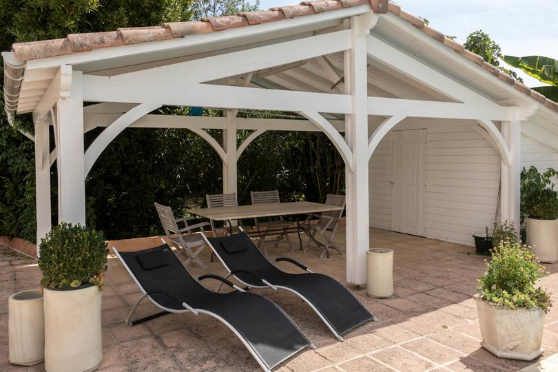

Vous cherchez un lieu de mariage près de Toulouse ? Le Sud-Toulousain offre ce que les couples recherchent de plus en plus : un cadre nature et préservé, à quelques minutes seulement de la ville. Voici nos conseils pour organiser une réception réussie, et pourquoi un domaine avec hébergement sur place change tout.
Pourquoi choisir un domaine plutôt qu'une simple salle ?
Une belle salle ne suffit pas à faire un mariage mémorable. Un domaine vous offre un lieu unique pour toute la journée : cérémonie laïque dans le parc, vin d'honneur au bord de la piscine, repas et soirée sous une tente permanente dans le parc, et brunch du lendemain sur place. Vous privatisez un véritable écrin, sans contrainte de voisinage. Si vous rêvez d'une ambiance nature et décontractée, notre guide du mariage champêtre près de Toulouse détaille cette inspiration.
L'atout décisif : l'hébergement sur place
C'est souvent le casse-tête n°1 d'un mariage à la campagne : où dorment les invités ? Au Domaine des Six, cinq logements indépendants accueillent jusqu'à 15 personnes sur place. Vos proches prolongent la fête sans reprendre la route, et vous profitez d'un petit-déjeuner tous ensemble au bord de la piscine.
- Tranquillité — plus de trajets de nuit pour la famille proche.
- Convivialité — la fête continue le lendemain matin.
- Logistique simplifiée — préparatifs des mariés sur place dès le matin.
Un cadre photogénique à 20 minutes de Toulouse
Parc arboré de 4 600 m², oliviers, piscine plein sud, kiosque, paillote et vue sur les Pyrénées : la lumière du Sud sublime vos photos, tout en restant accessible pour vos invités venus de Toulouse, Muret, Carbonne ou Rieumes.
Combien d'invités, quel budget ?
Définissez d'abord votre nombre d'invités : il conditionne le lieu, le traiteur et le budget. Sous la tente du parc, comptez 30 à 40 convives pour un repas assis, 40 à 60 en cocktail et jusqu'à 120 pour une cérémonie. Pensez ensuite à anticiper la location du lieu, le traiteur, la décoration, l'animation et l'hébergement.
Au Domaine des Six, la formule mariage démarre à 1 200 € la journée (2 490 € le week-end) et inclut la tente, le pool house, la piscine et la paillote ; l'hébergement de vos proches se facture en sus. Pour un devis personnalisé, le plus simple est de nous décrire votre date et votre nombre d'invités.
Quand réserver ?
Les meilleurs lieux de mariage se réservent 12 à 18 mois à l'avance, surtout pour les samedis de mai à septembre. Le Domaine des Six ouvre à la mi-janvier 2027 : c'est le moment idéal pour réserver votre date 2027 en avance et bénéficier des premières disponibilités.
Questions fréquentes
Par où commencer pour organiser son mariage près de Toulouse ?
Quel budget pour la location du lieu ?
Où loger les invités le soir du mariage ?
À lire aussi
Nos logements pour vos invités
Ouverture mi-janvier 2027
Votre projet au domaine
Dites-nous votre date, le nombre de personnes et votre format : nous construisons la journée avec vous, sur devis.
Demander un devisTéléphone 06 98 20 02 08 · francois.leterrier.cmw@gmail.com